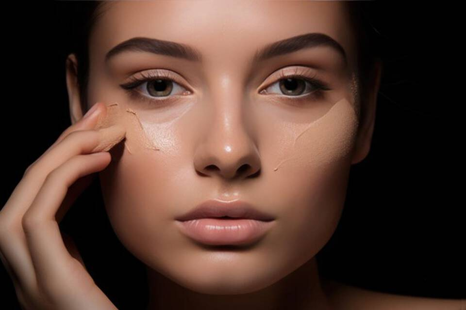
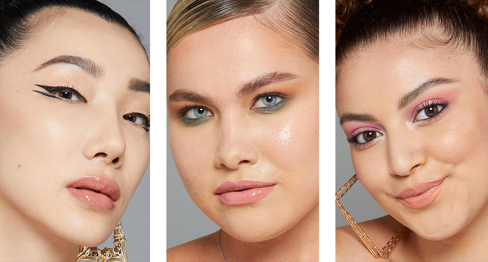
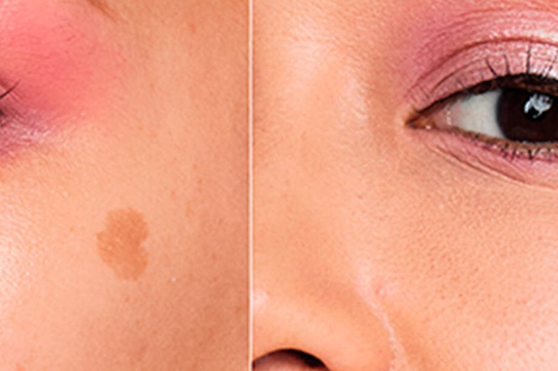

Maquillaje cubrir manchas

Un buen maquillaje comienza con una piel bien preparada. desapues aplicar el corrector de maquillaje que te ofrece una amplia gama de tonos para corregir y neutralizar las manchas.Para un acabado impecable y duradero, sella tu maquillaje con el spray fijador de maquillaje
quitar y evitar los brillos en la cara

Mantener la piel limpia es un paso del que no podemos prescindir ningún día, se vaya o no maquillado. Es muy importante realizar la limpieza tanto de día como de noche. También es fundamental elegir bien nuestra rutina de skin care (tónico, sérum, crema…) adaptados al tipo de piel de cada uno.
Tips para quitar y evitar los brillos en la cara

Aplicar sombra de ojo en todo el párpado para igualar el color, luego aplica delineador de ojos, para un mayor glamour, puedes agregar purpurina o brillantes en tu lagrimal. aplícate una máscara de pestañas para alargarlas y definirlas;perfecciona tu maquillaje de ojos de sirena con un iluminador. Úsalo en la zona del hueso de la ceja y en los lagrimales para resaltar y agregar brillo a tu mirada.